看见 不可见.
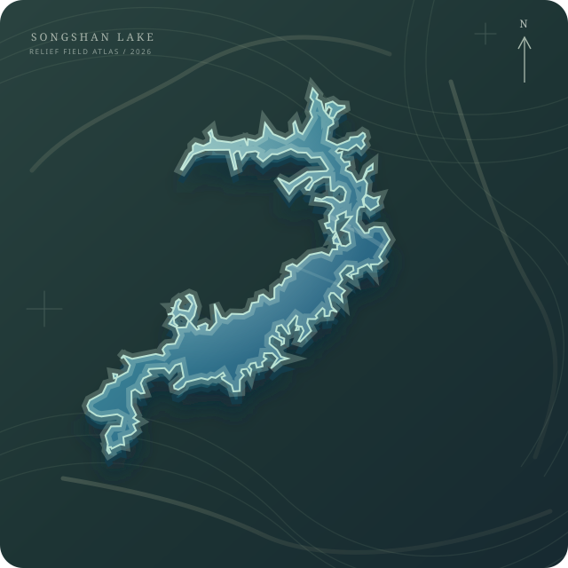
- 01 中国散裂中子源
- 02 中国科学院东莞材料科学与技术研究所
- 03 广东省智能机器人研究院
- 04 大湾区大学（松山湖校区）
- 05 华为溪流背坡村园区
- 06 悠兰里（ULAND）
保留原版湖岸浮雕。六处参访地点依据地理坐标标注相对位置，参考 OpenStreetMap 与高德地图。湖岸轮廓为艺术化示意，不用于导航。
THE QUESTION / 从一个问题出发
一项技术，要走多远，才能抵达日常？
十月的松山湖，我从中国散裂中子源启程，走近肉眼难及的物质世界；又循着材料研究、广东省智能机器人研究院、XbotPark 与松灵机器人，看见创意从图纸走向现实。在华为运动健康科学实验室，我感受到技术与日常的距离；悠兰里的皮划艇和湖上晚风，则为密集的行程留下片刻从容。
直到走进大湾区大学（松山湖校区）的人才交流现场，我才愈发意识到：科技的故事，终究也是人的故事。散落在湖畔的地点，渐渐汇成同一个追问——从最初的疑问到真正有用的成果，我们究竟还需要走过多少路？
FIELD NOTES / 松山湖行走笔记
从实验室到湖边，我把见闻写下来。
这几天走下来，我总忍不住想：实验室里的一个想法，怎样才能真正改变我们的生活？我把最触动自己的五段参访经历串在一起。它们不是一条现成的产业链，而是我一路看、一路问之后，留下的五个观察角度。
看不见的世界，
怎样被看见？
中国散裂中子源 / FIELD REPORT 01
真正让我停下来思考的，并非装置的体量，而是它所指向的、肉眼无法抵达的世界。
物质内部的结构、运动与变化，常常沉默在表象之下。中国散裂中子源为研究者提供中子散射实验条件，让他们从测量所得的数据中寻找线索，研究材料、能源与生命科学等领域的问题。在这里，“看见”不再只是凝视，更是测量、求证与不断修正。
我想到的还有另一层问题：如此深入的探索，为什么离不开大型共享设施、不同团队的协作和长久的投入？有些未知，单凭一间实验室难以照亮；许多人把知识、时间与资源汇聚起来，世界的边界才可能被一点点推开。
以下为 10 月 22 日科研参访记录。
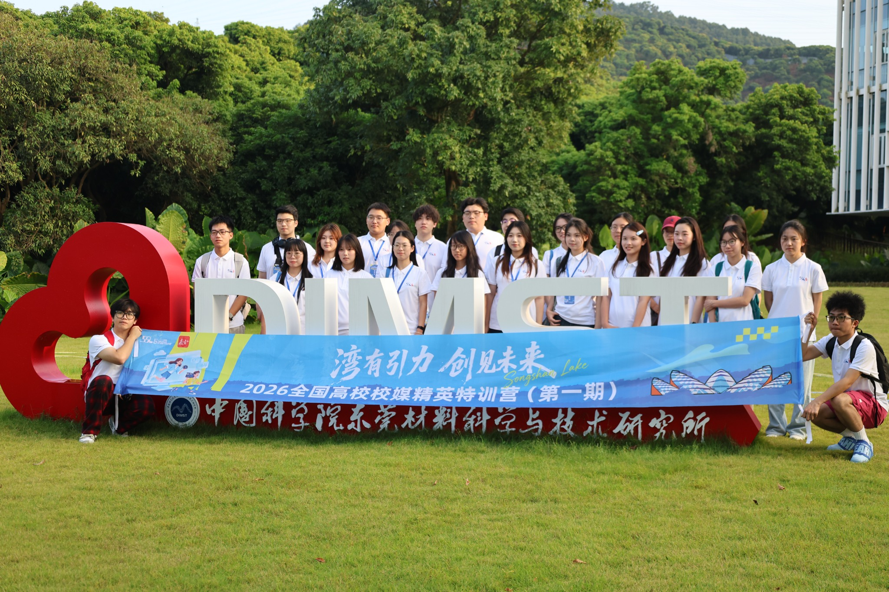
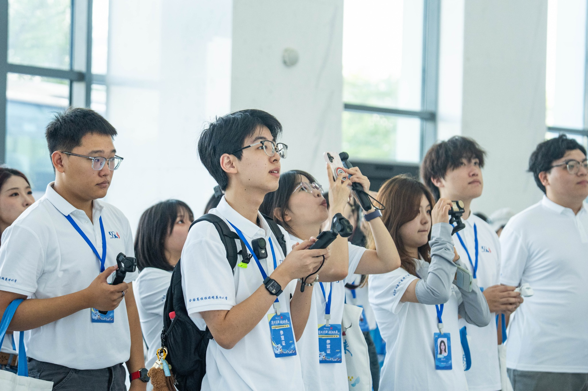
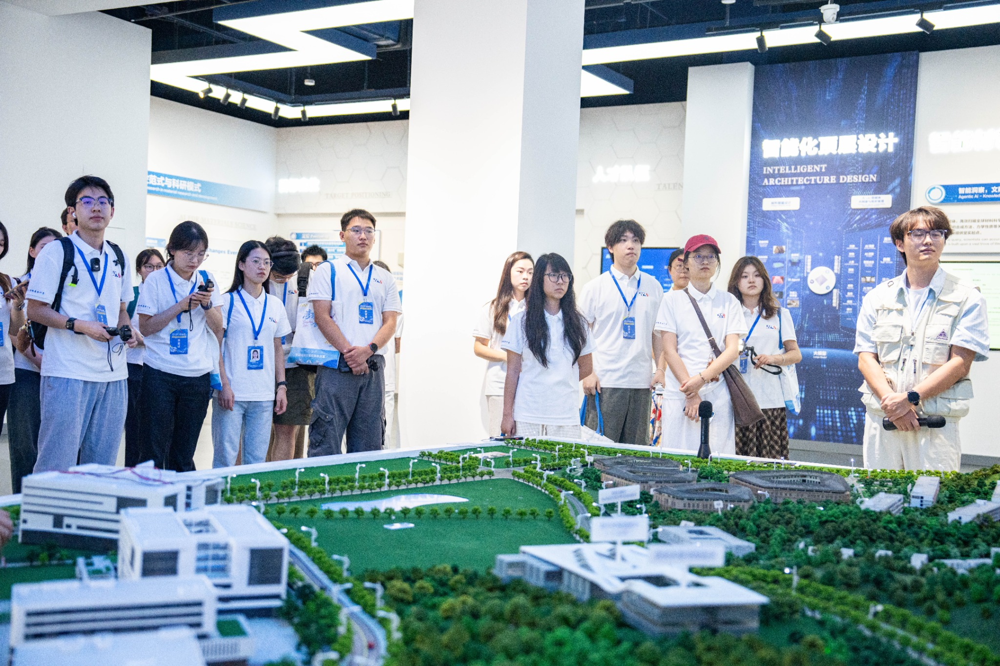
从一种材料，
看见更多可能。
中国科学院东莞材料科学与技术研究所 / FIELD REPORT 02
走进材料研究现场，抽象的科学忽然有了质地：展柜里的样品、屏幕上的结构图，都在提醒我，一项成果从来不只是一串漂亮的数据。
那天下午，我们走过展厅与实验室，听到关于非晶材料以及 AI 辅助材料研究的介绍。一边是面对真实材料的观察、实验和检验，一边是试着从复杂信息中寻找规律、辅助判断。方法各异，却都要求研究者对结果保持谨慎。
一个现象能在实验中发生，尚不意味着它可以在生活中经得起考验。能否重复、能否制造、成本是否可控、究竟替谁解决问题——从发现到应用之间，横亘着一道道朴素而严格的关口。
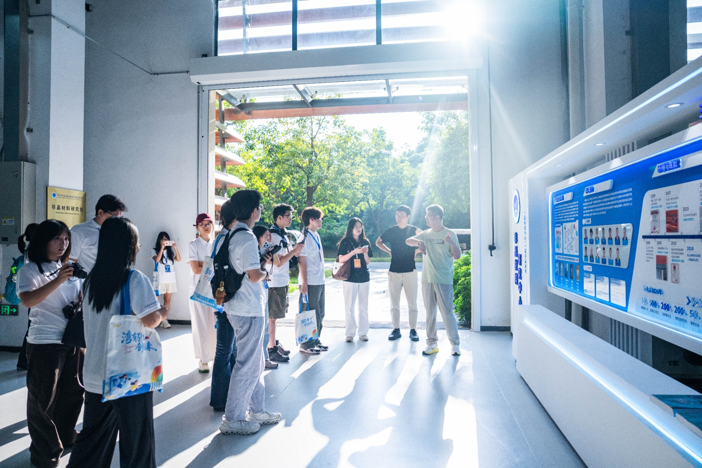
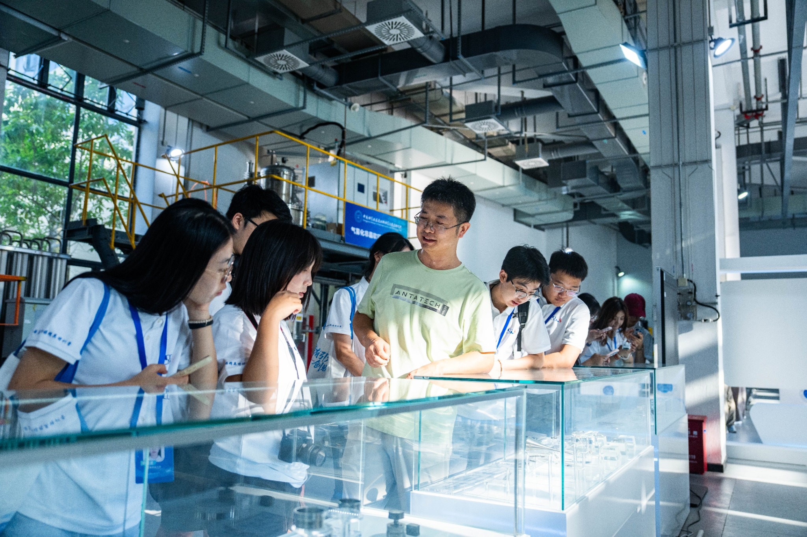
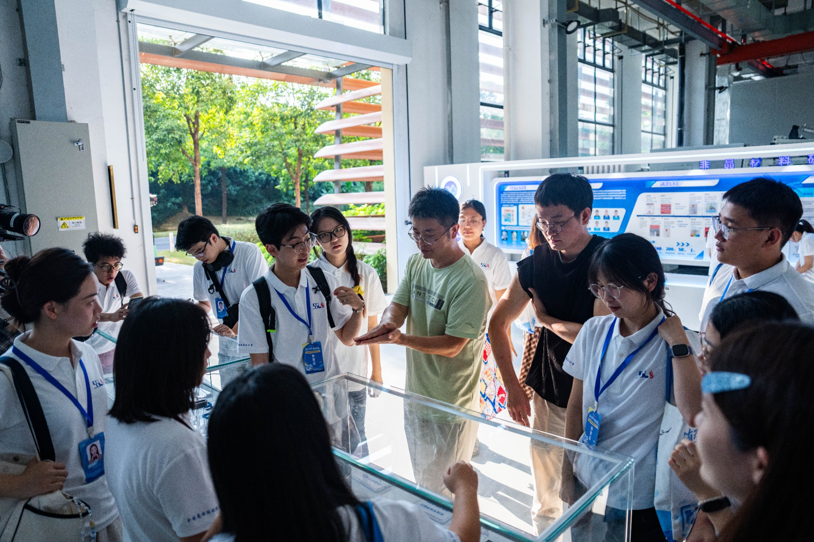
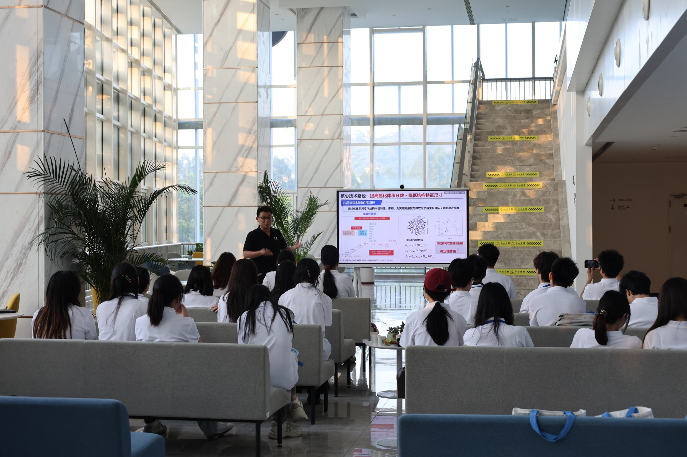
让技术，
开始行动。
广东省智能机器人研究院 · XbotPark · 松灵机器人
站在机器人展示区前，惊叹几乎是本能；可离开现场，我更想知道：它究竟会在哪个人的生活里，真正派上用场？
两天里，从广东省智能机器人研究院到 XbotPark，再到松灵机器人，我先后接触研究、创业培育与产品应用的不同侧面。它们并非一条现成的产业链，却共同提醒我：技术一旦离开实验室，面对的就不再只是技术问题。
一台机器即使能在演示中流畅地完成动作，也还要在真实环境中回答更多追问：谁愿意使用？能否长久稳定地工作？出了故障怎么办？成本与维护由谁承担？展示让人看见可能，日复一日的使用，才真正检验价值。
离开现场后，还想问的三件事。
机器人如何走出展示台，找到第一个愿意使用它的人？
我站在展台前时，也会先被机器人的动作吸引。但如果换成真实使用者的身份，我想知道的会是：它替我省下了什么、解决了什么？一场精彩演示能赢得掌声，却未必能换来第一次真正的使用。
从一次成功演示，到千百次可靠运行，要跨过什么？
对我而言，技术真正困难的地方，也许藏在演示结束之后。连续工作时会不会出错？维修需要多长时间？这些不太适合放进宣传片的细节，才决定一台机器能否被放心交给别人。
选择扎根松山湖，团队最需要怎样的支持？
我学金融工程，因此也会想一笔更现实的账：研发、试错与等待客户认可，都需要时间和资金。比起一句“欢迎创业”，我更想了解一个年轻团队遇到困难时，能否在这里找到测试场景、合作伙伴，以及继续做下去的底气。
离开展台后，我把这三个问题记在了一起：我不只想知道机器人“能做什么”，更想知道，它能否持续、可靠地为真实的人做事。
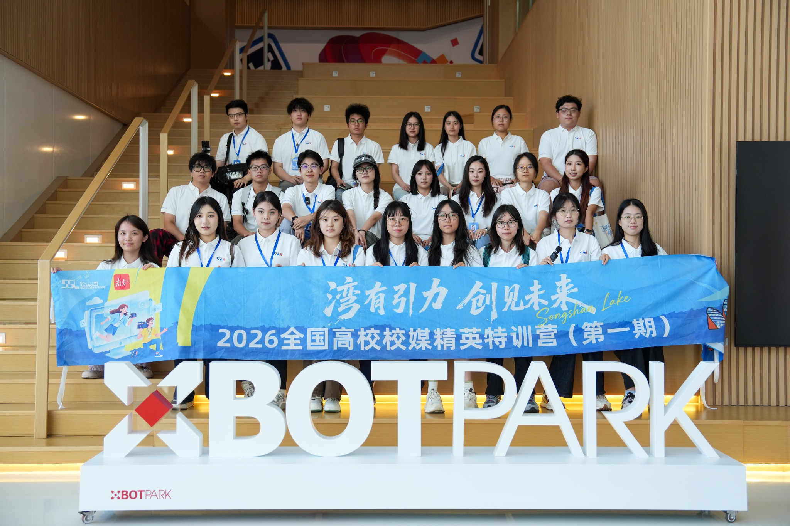
当科技不再遥远，
而是关乎每一天。
华为运动健康科学实验室 / 松山湖 · 悠兰里
前一天我还在运动健康实验室里思考数据与设备，第二天便坐上松山湖的皮划艇。原来“应用”二字，一头连着精密研究，一头连着最寻常的身体感受。
在华为运动健康科学实验室，运动不再只是一个动作，也可以被观察、测量与记录。听着现场讲解，我开始留心那些看似细小的问题：数据怎样被采集和理解？研究怎样进入产品设计？一项功能能否让普通人在日复一日的使用中感到安心与便利？
我渐渐明白，科技与生活之间的距离，并不靠宏大的概念来缩短。好的应用既需要精密的能力，也需要体察日常的耐心；它最终面对的，不是展台，而是一个个具体的人。
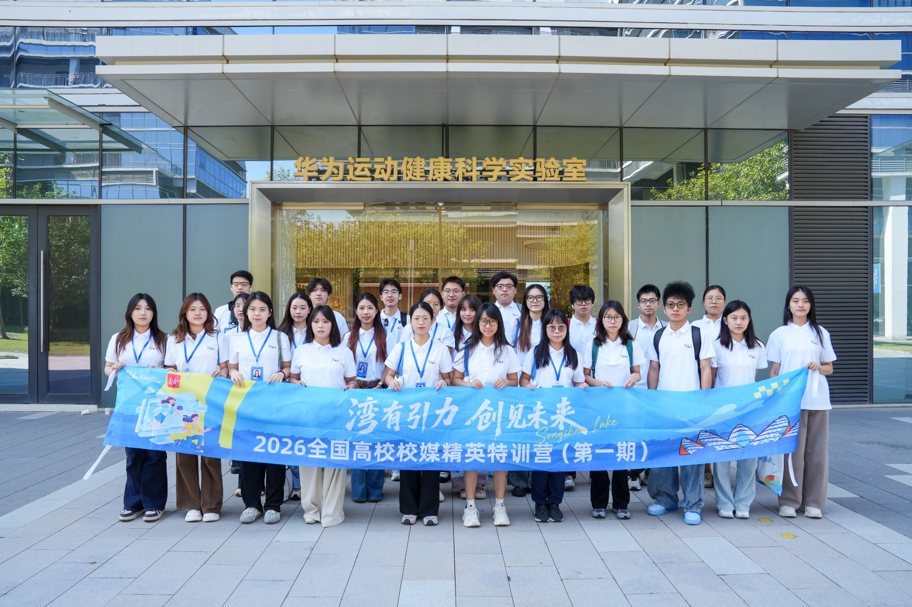
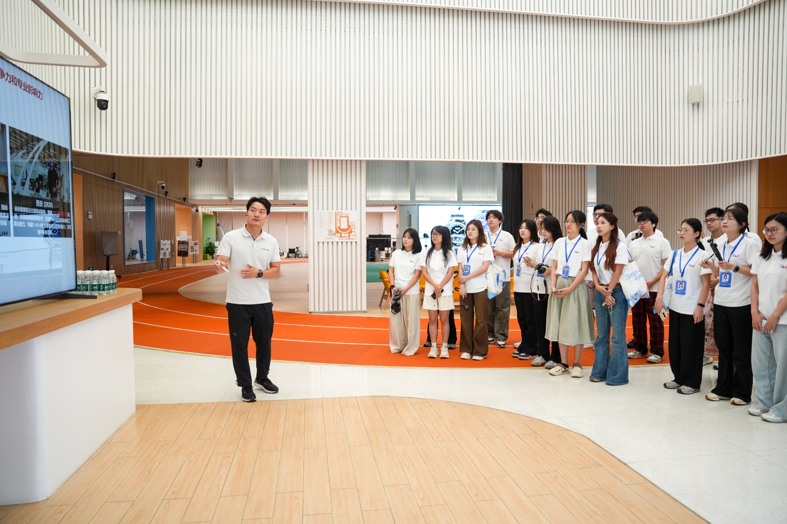
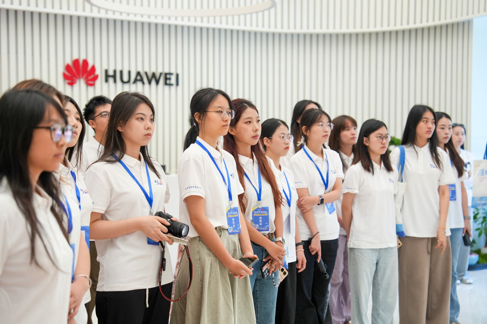
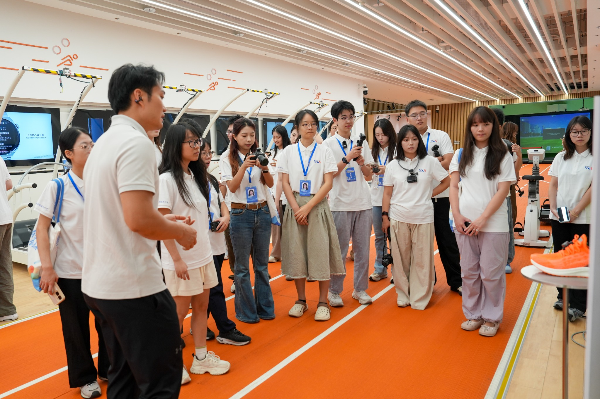
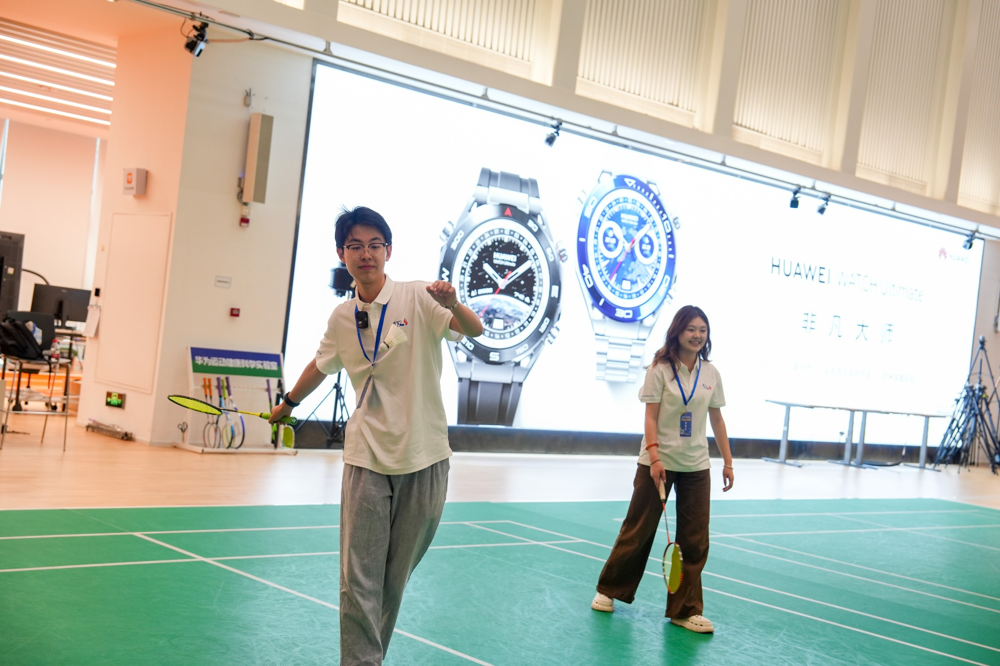
离开展厅，
划进湖光里。
10 月 24 日下午，在悠兰里穿上救生衣，和我的同伴坐进皮划艇里。船身随着水波轻轻晃动，桨叶划过湖面，原本在实验室里反复思考的“运动体验”，忽然有了极具体的模样：掌握平衡，也学着与身边的人配合节奏。
夕阳慢慢落向湖岸，水面铺开细碎的金光。前一天，我试着理解科学如何认识身体；这一天，我把注意力还给了身体本身。科技能帮助我们记录运动的轨迹，而亲身经历的快乐，终究要由自己完成。
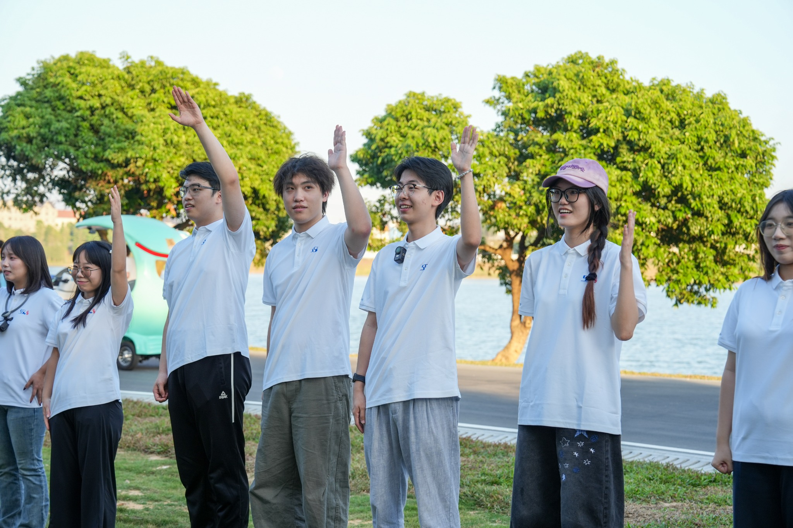
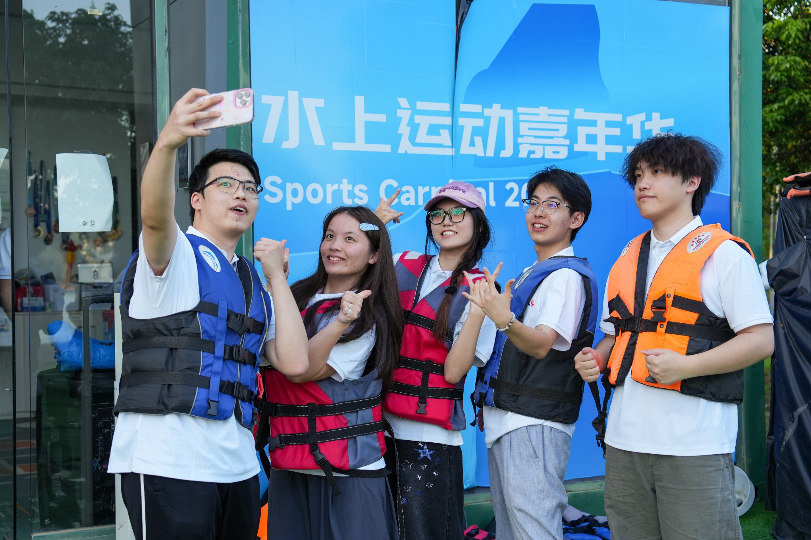
最终推动技术向前的，
仍然是人。
大湾区大学（松山湖校区） / 人才交流现场
在大湾区大学（松山湖校区）的活动现场，我看见另一种不同于实验室的忙碌：有人讲述研究，有人倾听、记录，也有人试着判断一个想法的下一程。
开幕式与博士博士后创新创业大赛相关活动，让抽象的“人才发展”有了具体的面孔与声音。站上路演台的研究者，不只要讲明白技术本身，还需解释它回应了什么现实需求，为什么值得继续投入。创新离不开专业知识，也离不开与世界沟通的能力。
我学金融工程，因而格外在意技术之外的另一种时间：一项尚未成熟的研究，怎样获得继续试错的资金、耐心与机会？吸引人才是一时的选择；让他们有条件把事情做成，才是一座城市更长久的承诺。
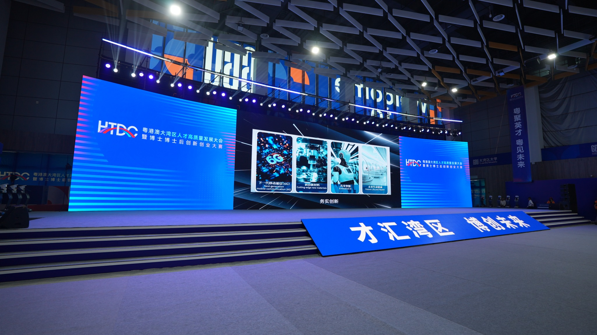
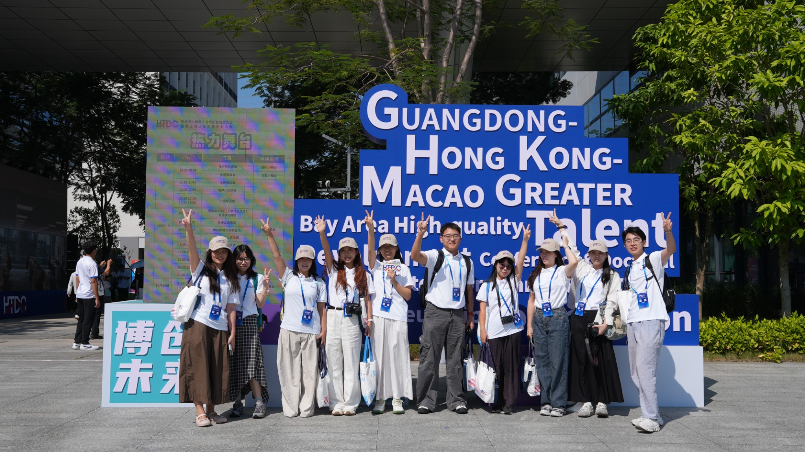
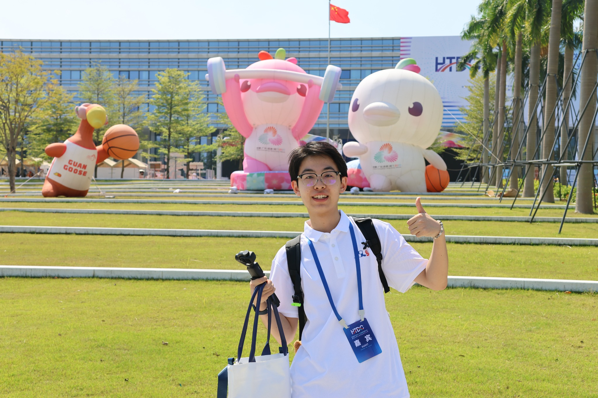
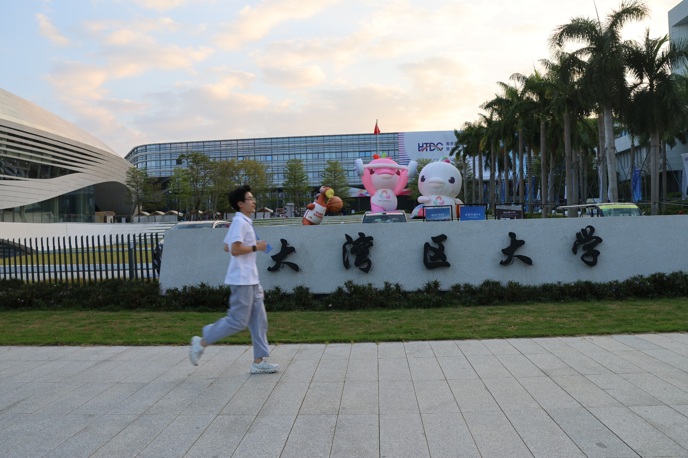
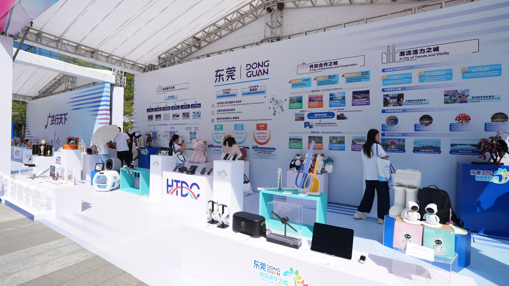
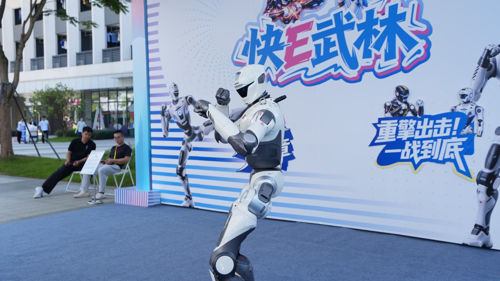
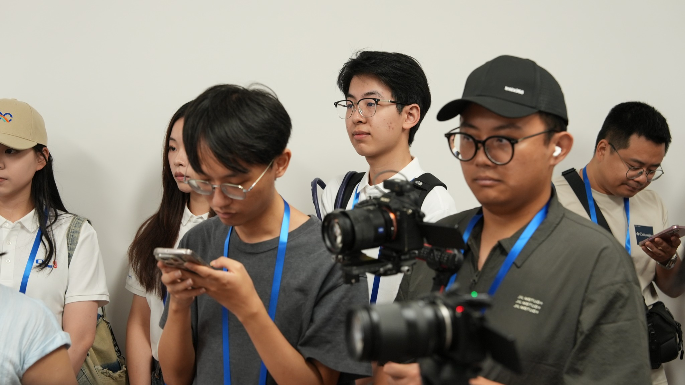
看见不可见，然后看见可能。
这几天，我在松山湖见过庞大的科研装置、实验中的新材料，也看过机器人在展台前迈出的那一步。镜头能记录现场，却很难拍到一项技术真正走向生活之前，需要经历多少次验证、等待和修改。
出发前，我更容易被“新”吸引。走过几个现场之后，我开始问一些没那么炫目的问题：它能不能被反复验证？有没有人真正需要？失败之后，还能不能继续试？
作为一名学金融工程的大学生，我也会想：一个年轻人、一支科研团队，要把一个想法做成，除了能力，还需要资金、伙伴与耐心。一座城市的吸引力，不只在机会有多少，也在遇到困难时能否让人继续尝试。
这趟旅程没有替我回答所有问题。
但我想带走的，正是继续追问的习惯。
重新流动。
从静态长图进入动态叙事，继续探索松山湖科技现场。
公开互动版现已同步至 GitHub Pages。欢迎用手机浏览器开启影像与交互体验。